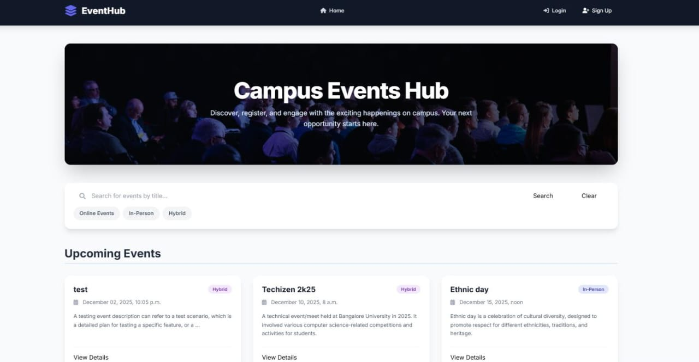
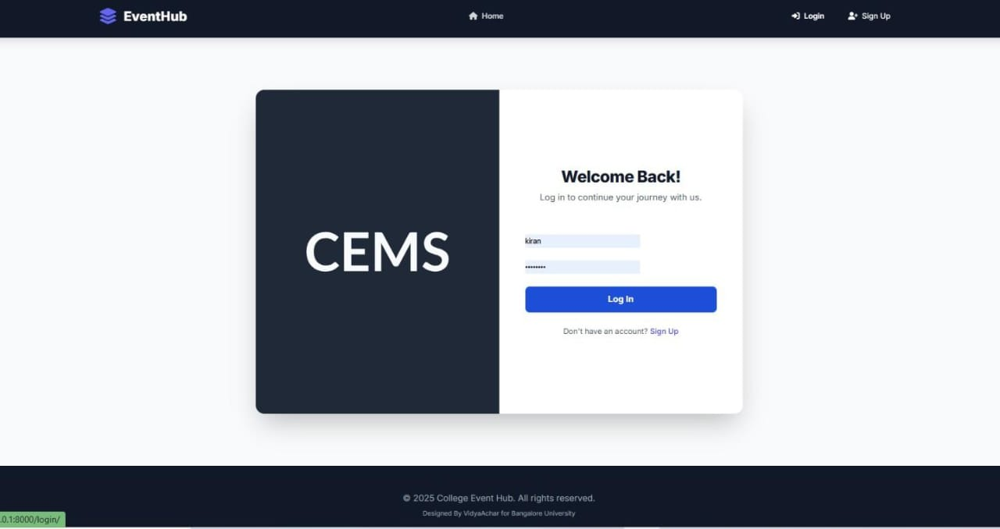
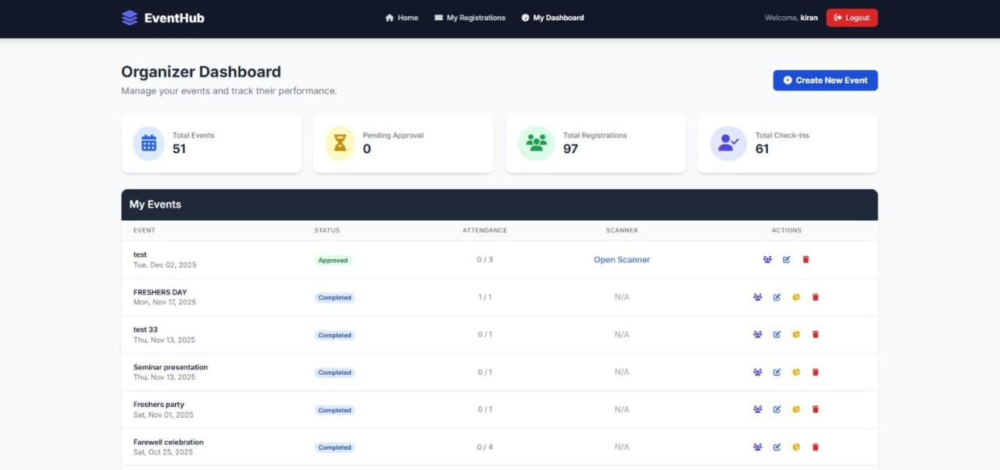
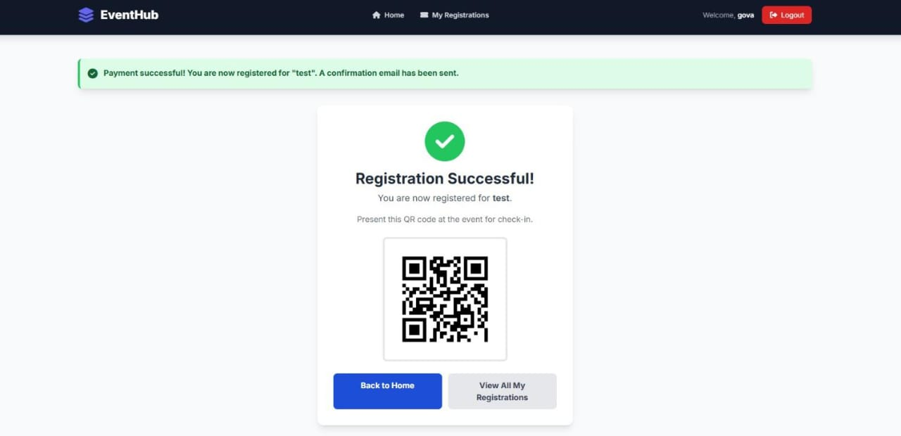

Participant: Can browse approved events, register for them, and provide feedback. Organizer: Can create, edit, and delete their own events (submitted for approval), view participants, and access an analytics dashboard. Head of Department (HOD): Staff user who approves or rejects events.
Approval Workflow: Events require HOD approval before becoming visible. Organizers are notified via email. QR Code Ticketing: Unique QR codes are generated and emailed as PDF tickets upon registration. Web-Based Check-in: Built-in QR scanner for organizers to validate tickets. Automated Emails: Confirmations, status updates, and feedback requests. Feedback & Analytics: Star ratings, comments, and organizer dashboards. Scheduled Tasks: Auto-completion of events and feedback emails.
django-apscheduler, qrcode[pil], xhtml2pdf, python-decouple